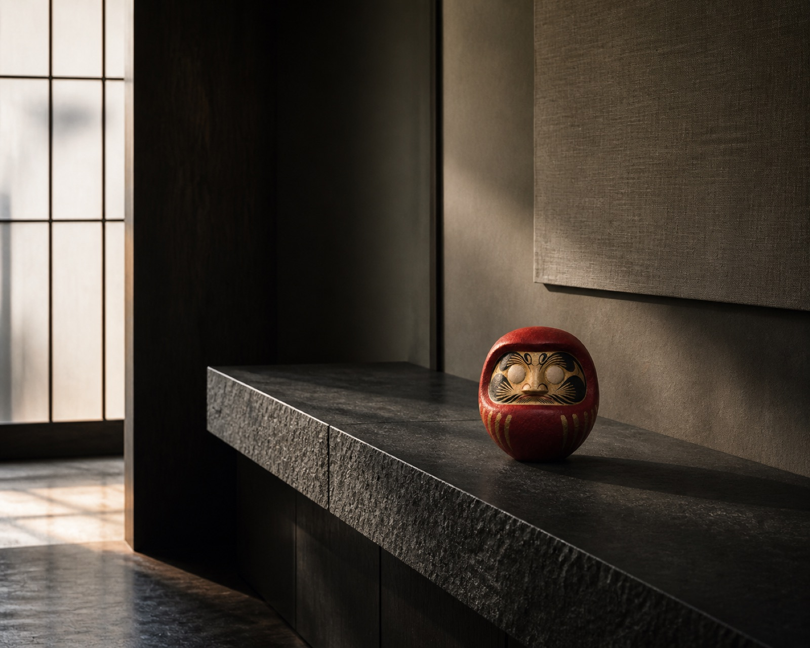

DARKNESS / 01
願いは、まだ見えない。
光の届かない場所にも、意志は静かに存在している。
FORM / 02
想いが、かたちを持つ。
光が輪郭をなぞり、受け継がれた形を浮かび上がらせる。
GAZE / 03
目を入れる。未来を見る。
墨の一筆は、祈りを自らの決意へ変える。
GOFUN / 04
余白に、光が宿る。
白い肌理は、光を受けるたびに手仕事の陰影を見せる。
78 DARUMA / 05
願いを、宿す。
MODERN DARUMA OBJECT / ART. INTERIOR. TRADITION.

COLLECTION 01
朱、墨、胡粉。
COLLECTION 01
三つの、静かな意志。

78 DARUMA / NANAHACHI
願いを、
宿す。
願いは、叫ばなくていい。静かに、空間に宿せばいい。78達磨は、日本の達磨を現代の空間に置かれるアートオブジェへ再構築します。

IN SITU / RESIDENCE
祈りを飾るのではない。
空間に、意志を置く。
守るのは、願いを形にする文化。
変えるのは、飾られ方と見え方。
七転び八起きの先にあるもの。78という名前と、ものづくりの思想。
思想を読む →WAITLIST / LAUNCH NOTICE
販売開始を、待つ。
現在は販売開始前です。販売開始の合図を受け取りたい方は、専用画面でメールアドレスだけを残してください。